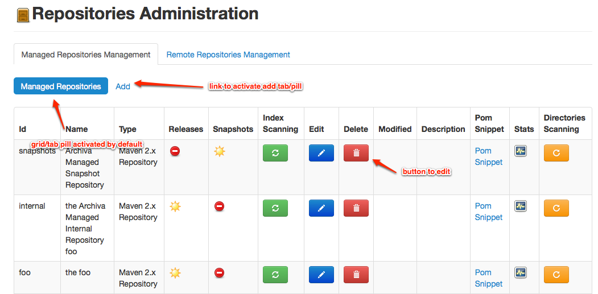
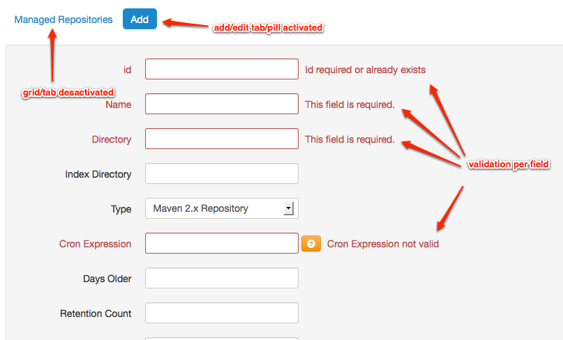

Archiva Javascript Web Application
General design
The goal is to have a "one page loading" javascript application.
For this the only html page will contains a div with id "main-content" this div will be populated
by jquery template execution (see template loading).
The server will be contacted only for REST request/response (see details).
All UI rendering will be done only on client side.
As we are not designer :-), the application will use the twitter bootstrap css.
Runtime Properties
The application is designed to use http cache mechanism for css, javascript. Except REST call to get datas which will never use cache as a query timestamp parameter is used. But as this can cause issue in developpement phase, two system properties (disabled by default) prevent can prevent caching and/or help debuging
- archiva.devMode=true/false: if true will add a timestamp query parameter for loading js and html templates.
- archiva.javascriptLog=true/false: will activate javascript log, method available with $.log(msg)
- archiva.logMissingI18n=true/false: will activate remote logging of missing i18n key in the servlet container log: INFO archivaMissingi18n.logger - missing i18n key : 'proxy-connectors.grid.managedrepo.title'
Used Javascript frameworks
We use some well known javascript framework librairies :
- jquery.
- sammyjs for hash navigation
- requirejs for template loading (see details).
- jquery-i18n-properties for i18n loading (see details).
- knockoutjs as we use a MVVM pattern (see knockout binding).
- twitter bootstrap js to magnify the ui.
- jquery validate for form validation.
Sources organisation
Sources are located in src/main/webapp of the archiva-webapp module :
- css
- images
- js
js directory
Root directory contains external libraries.
archiva directory contains archiva js files with a subdirectory templates which contains templates
redback directory contains redback js files with a subdirectory templates which contains templates
Start page
The main page will load javascript files, load i18n, load templates and insert menu.
This main page is divided in 3 parts:
{kind=link}
- #topbar-menu-container is populated with the template js/archiva/templates/topbar.html.
- #sidebar-content is populated with the template js/archiva/templates/menu.html.
- #main-content is the place where screen will appear.
- hidden #html-fragments will contains loaded templates.
Link are visible/hide depending on needed redback karmas. You can configure redback operations needed for a link using the attribute redback-permissions in your html element (by default element needed karma must be marked display: none):
Support array: at least one operation is needed:
<div .... redback-permissions="{permissions: ['archiva-manage-users','archiva-manage-configuration']}" style="display: none">
Support single value:
<li style="display: none" redback-permissions="{permissions: ['archiva-manage-users']}">
Grid/edit model
We use a tab/pill models to display grid of datas and edit/add form:
-
One tab/pill display the grid

Repositories Grid -
One tab/pill display the edit/add form. As we use knockout framework grid will be updated with new value from add/edit form automatically.

Repositories Edit/Add
{kind=link}
{kind=link}